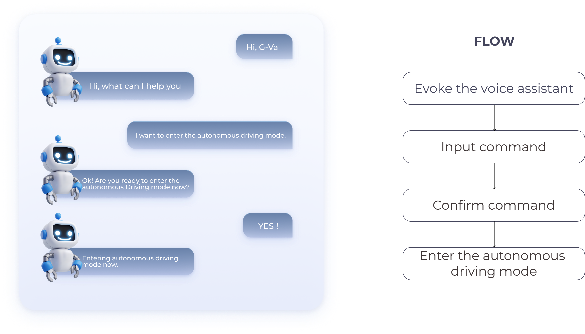

With the popularization of assisted driving functions such as L2 and L3, the mode switch between driver-controlled and vehicle-controlled driving has become an important vehicle control function.
OUTPUT: 1/ Safety Issues 2/ Trust Issues 3/ Insufficient Alerts
1. Safety
-Continuous monitoring and timely warnings under static/dynamic scenarios.
2. Trust Issues
-Drivers' trust issues with the autonomous driving system.
3. Operational Efficiency
-Simplify operational pathways through multiple channels, while preventing accidental entry into autonomous driving mode.
-Different scenarios can use different interaction methods.
Status Breathing Light
The complexity of the situation is displayed through the status light, informing the driver of the driving status.
Seat Vibration Takeover Alert
When the driver needs to take over the steering wheel, pre-alert through seat vibration to warn the driver.Three Mode Switching Method.
Voice Interaction
Enter voice command to switch to autonomous driving mode.
Mechanical Interaction
Pull the lever twice to enter autonomous driving mode.
Interface Interaction
Select "Autonomous Driving" on the central control panel.

Convenience
Activate autonomous driving through simple voice commands without manual operation.
Safety
Allows the driver to activate autonomous driving while keeping both hands on the wheel, reducing distractions.
Error Prevention
Voice confirmation commands prevent accidental entry into autonomous driving mode.
Precision
Mechanical controls typically provide accurate input, reducing the possibility of errors.
Intuitiveness
Physical buttons and switches offer more intuitive and easily understandable operations
Immediate Feedback
Immediate physical feedback confirms the user's actions.
Protopie Link
*Since ProtoPie cannot activate voice recognition interaction through voice command, when G-Va appears, you need to first click on G-Va. After clicking on G-Va, normal voice interaction can then proceed.
*The keyword to activate the autonomous driving mode is 'autonomous driving mode”